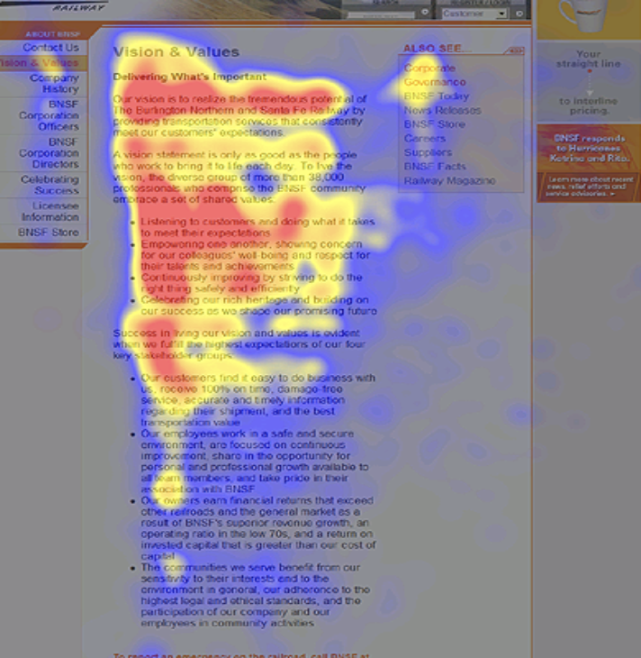

Plain Language Rules
Write for the web
This section refers to the audience as users since that is a more common term in the web community. To effectively communicate with your web users, you must use plain-language techniques to write web content. This section will explain the differences between print and web writing and how to create sites that work for your users.
Users do not read entire web pages
People use the internet to easily find, understand, and use information to complete a task. Unlike print media, people do not read entire web pages. They scan instead. Nielsen and Morkes, in a famous 1997 study, found that 79 percent of their test users always scanned any new page they came across; only 16 percent read word-by-word.
Even with more people using the web, the percent of content that is read on a website has not increased by much. Here are some facts to consider when writing web content:
- In a 2008 study, based on analysis of 45,237 page views, Nielsen found that web users only read about 18% of what’s one page.
- As the number of words on a page goes up, the percentage read goes down.
- To get people to read half your words, you must limit your page to 110 words or fewer.
Users focus on certain aspects of websites
Since we know web users scan web pages, we need to learn what they look at. Users often scan pages in an F pattern focusing on the top left side of the page, headings, and the first few words of a sentence or bulleted list. On average, users only read the first two words on each line. Also, users can decide in as little as five seconds whether your site is useful to them. Here is an image of one of the eye tracking pages. The red shows where the user looked the most:
References
- www.useit.com/alertbox/percent-text-read.html
- www.customercarewords.com/what-it-is.html
- Eyetracking Web Usability, New Riders Press, December 14, 2009
- www.uie.com/articles/five_second_test/
Customers use websites to complete tasks
Think about how well your website allows customers to get something done. Customers come to your site to perform a task. They come because they expect to get self-service. People come to your website with a specific task in mind. If your website doesn’t help them complete that task, they’ll leave. You need to identify the mission — the purpose — of your website, to help you clarify the top task your website should help people accomplish.
Know your customers
In order to write for your users, you need to know who they are! Here are some general tips to help you identify your users:
- Listen to user questions — what do your visitors ask when they send you an email or call your office?
- Talk to users and ask them what they want.
- Analyze your web metrics to figure out what people are looking for on your website:
- What are your most-visited pages and where do people spend the most time?
- What top search phrases do people use?
There are many techniques to help you learn about your users. For details and best practices visit www.usability.gov.
References
Formatting information for the web
After identifying your users and their top tasks, it is time to actually write web content. If you think it would be easy to just duplicate information you’ve written for print documents, you are wrong. While the information is helpful, it’s not in the right format for the web. Remember, people scan web pages and only read about 18 percent of what’s on the page! This means you need to cut whatever you have in print form by 50 percent!
Inverted pyramid style
Good web content uses: The inverted pyramid style.
- Begin with the shortest and clearest statement you can make about your topic.
- Put the most important information at the top and the background at the bottom.
- Chunked content. Don’t try to pack everything into long paragraphs.
- Split topics up into logical sections separated by informative headings.
- Only necessary information: Use only the information your users need to achieve their tops tasks. Omit unnecessary information.
Clear content
Remember: Your content is NOT clear unless your users can:
- find what they need
- understand what they find
- use what they find to meet their needs
References
- Nielsen, Jakob, Designing Web Usability: The Practice of Simplicity (and other works), 1999, New Riders Publishing, Indianapolis.
- McGovern, Gerry, Killer Web Content: Make the Sale, Deliver the Service, Build the Brand (and other works), 2006, A&C Black.
- Redish, Janice, Writing Web Content that Works, 2007, Morgan Kaufmann Publishers, San Francisco.
Web writing is different from print writing
Don’t cut and paste the text of print documents to create web content. People are more likely to leave your webpage, potentially costing you time and money, because they will not take the time to find what they are looking for. Print writing is different from web writing. Print is very linear and narrative driven. In print, you can go into great detail about mundane things like eating breakfast. If you are a great writer, that can be an interesting story. But, those interesting stories don't work on the web. Instead they slow down web users who are trying to accomplish a task. Jakob Nielsen (useit.com) explains that “Web users want actionable content; they don’t want to fritter away their time on (otherwise enjoyable) stories that are tangential to their current goals.” Because the web is “action-oriented,” you need to repurpose your print document. Pick out necessary information in your print document that will help your web users and create a new web page. Keep the most important and clear message at the top of the web page. Chunk your content into logical sections. Use headings to help users navigate the content. Highlight key facts in a bulleted list . Explain complex instructions in a visually appealing If/Then table.
References
Too many PDF documents push users away
Posting PDF versions (PDFs) of original documents on your site would seem to be an obvious alternative to re-writing your content in web-format. Unfortunately, this would work against your goal of retaining users. Posting too many PDF documents on your website can work against you. The Nielsen group has done multiple studies on PDFs and has consistently found that users hate them and try to avoid reading PDFs at all costs.
PDF files:
- Are slow to open and can sometimes crash a computer if they are too large.
- Are difficult for some screen users to read.
- Can make a user lose the website if they open in the same window
How to post PDF documents effectively
If you need to post a PDF use a gateway page — a web page that includes information about the PDF, including:
- what it’s about
- how large the file is
- who might find the information helpful.
Remember to follow 508-compliance guidelines when using PDFs. See www.section508.gov for more information on 508-compliance.
References
- www.useit.com/alertbox/20030714.html
Plain-language in web content
We discussed plain-language techniques early in the guidelines. These techniques apply to web writing as well. Please refer to the specific section in the table of contents.
When writing web content, use logical organization, informative headings, active voice, use pronouns, common words, use lists and tables. Avoid jargon and legalese, hidden verbs, passive voice, long sentences or paragraphs, abbreviations, unnecessary words, information the user doesn’t want.
Examples of not using plain-language
Many government websites and letters contain meaningless formal language such as flowery welcome messages and “we hope you get a lot out of our program” messages. Using this type of language wastes space and your users’ time. It conveys the impression that you are insincere. Don’t waste your users’ time. Instead, get directly to the point. Remember, time is money on the web. Keep your important information at the top of a web page. Don’t bury it under fluff messages.
Here is a brief list of meaningless filler phrases:
- Thinking outside the box
- Value added
- Best practice
- For all intents and purposes
- Touch base
- Integrating quality solutions
- Promoting an informed and inclusive multicultural society
- Strategically engaging schools, community organizations, and so on . . .
References
- Redish, Janice, Writing Web Content that Works, 2007, Morgan Kaufmann Publishers, San Francisco.
- www.contentini.com/writing-better-tips/
Having effective links
Links are about both content and navigation. Effective link names are key to satisfying your customers. The Eyetracking Studies showed links written in plain-language were the most effective. Plain-language links are written clearly so that the user understands exactly where the link will take them. Link names should be the same as the page name linked to. Don’t use the full name of a document or program as a link name. Be as explicit as you can — too long is better than too short. Make the link meaningful. Don’t use “click here” or “more.” Don’t embed links in text. It just invites people to leave your text! Add a short description when needed to clarify the link.
Remember, some of your users might be visually disabled. Do not use “Click Here” or “Click the green button” links. Make sure your links are accessible to all users. You want to use links that clearly explain the content of the page it links to. If your link says “Annual Reports,” then the destination page must be titled “Annual Reports.”
References
- McGovern, Gerry, Killer Web Content: Make the Sale, Deliver the Service, Build the Brand (and other works), 2006, A&C Black.
- Nielsen, Jakob, Designing Web Usability: The Practice of Simplicity (and other works), 1999, New Riders Publishing, Indianapolis.
- www.useit.com/alertbox/nanocontent.html